Juni 2026 - Sekarang
PERBANKAN SYARIAH & INOVASI DIGITAL
Halo, saya
Syamsu
Rizal
S.Kom., S.E., M.Si., C.HRA., CIAS
Banking Professional
Menghubungkan pengalaman perbankan, strategi pemulihan pembiayaan, dan teknologi digital untuk menciptakan solusi bisnis yang berkelanjutan.
✦
2× Juara 1 NasionalBest Collection & Recovery
PT. Bank Syariah Indonesia, Tbk
2023 & 2024
PT. Bank Syariah Indonesia, Tbk
2023 & 2024
◈
10+ tahunPengalaman perbankan
TEMPORARY ASSIGNMENT MANAGER · BSI
10+Tahun pengalaman
38Cabang dalam portofolio area
2×Juara 1 nasional berturut-turut
6Prototipe inovasi digital
01 / PROFIL PROFESIONAL
Tentang saya.
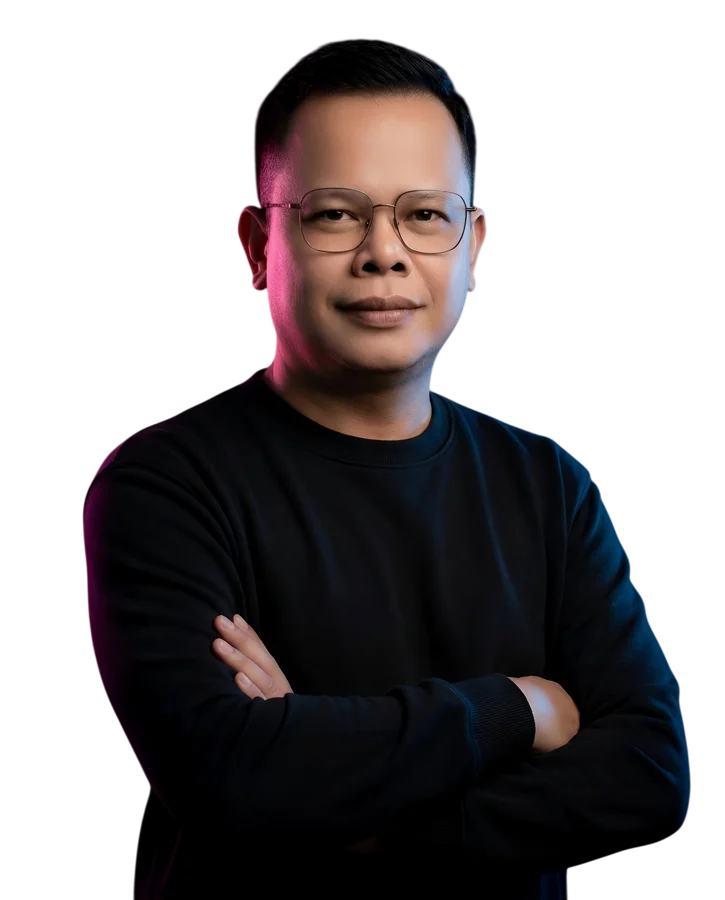
PT BANK SYARIAH INDONESIA TBK
Pengalaman yang terukur.
Inovasi yang relevan.
Profesional perbankan syariah dengan pengalaman lebih dari 10 tahun di bidang collection, restructuring, dan recovery pembiayaan. Memiliki rekam jejak prestasi nasional dengan kinerja unggul, pengalaman memimpin pengelolaan portofolio pembiayaan area hingga 38 cabang, serta kompetensi dalam pengendalian NPF, optimalisasi recovery, manajemen risiko, inovasi bisnis, dan pemanfaatan AI untuk produktivitas.
JABATAN SAAT INI
Temporary Assignment Manager
Retail Collection, Restructuring & Recovery Group (RCG)
PT Bank Syariah Indonesia Tbk · Kantor Pusat
Islamic BankingRisk ManagementDigital InnovationStrategic Leadership
02 / PENGALAMAN KERJA
Perjalanan karier.
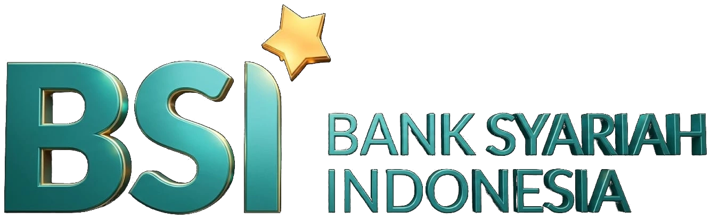
PT BANK SYARIAH INDONESIA Tbk
Temporary Assignment Manager —
Februari 2025 - Juni 2026
Area Collection, Restructuring & Recovery Manager — Surabaya Kota
Februari 2023 - Februari 2025
Area Collection, Restructuring & Recovery Manager — Balikpapan
Februari 2021 - Februari 2023
Area SME, Micro Collection, Restructuring & Recovery Officer — Padang (Cluster Bukittinggi)
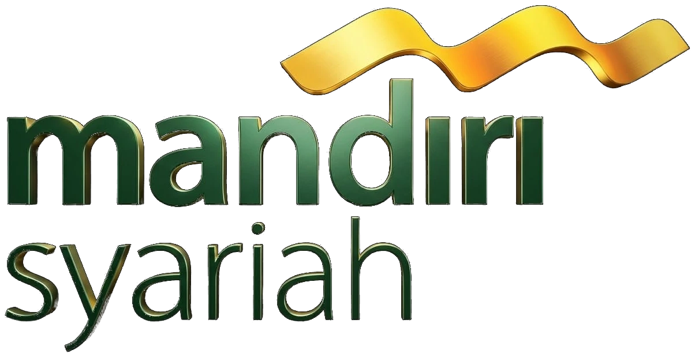
PT BANK SYARIAH MANDIRI
Oktober 2020 - Februari 2021
Retail Collection Officer
Mei 2015 - Oktober 2020
Account Maintenance Staff
Februari 2013- Mei 2015
Mentor Usaha
Februari 2012 - Februari 2013
Retail Sales Executive
Oktober 2011 – Februari 2012
Sharia Funding Executive
PENGALAMAN LAINNYA
PRIMAGAMA · 2005–2006
Deputy Branch Manager
PT. MUDA MANDIRI · 2004–2005
Marketing Relationship & Technical Advisor
03 / LATAR BELAKANG AKADEMIK
Pendidikan.
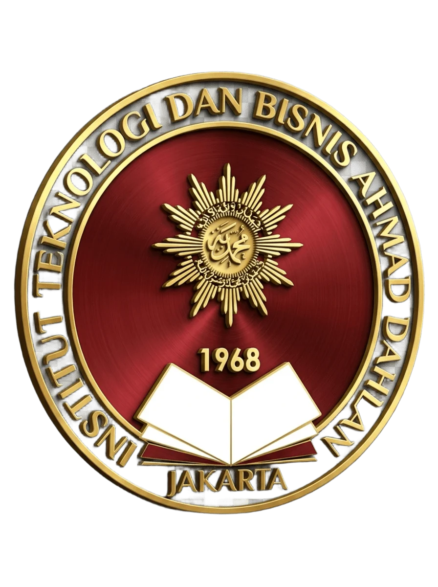
2021–2023
ITB Ahmad Dahlan Jakarta
S2 · Keuangan Syariah (Islamic Finance)
IPK 3,88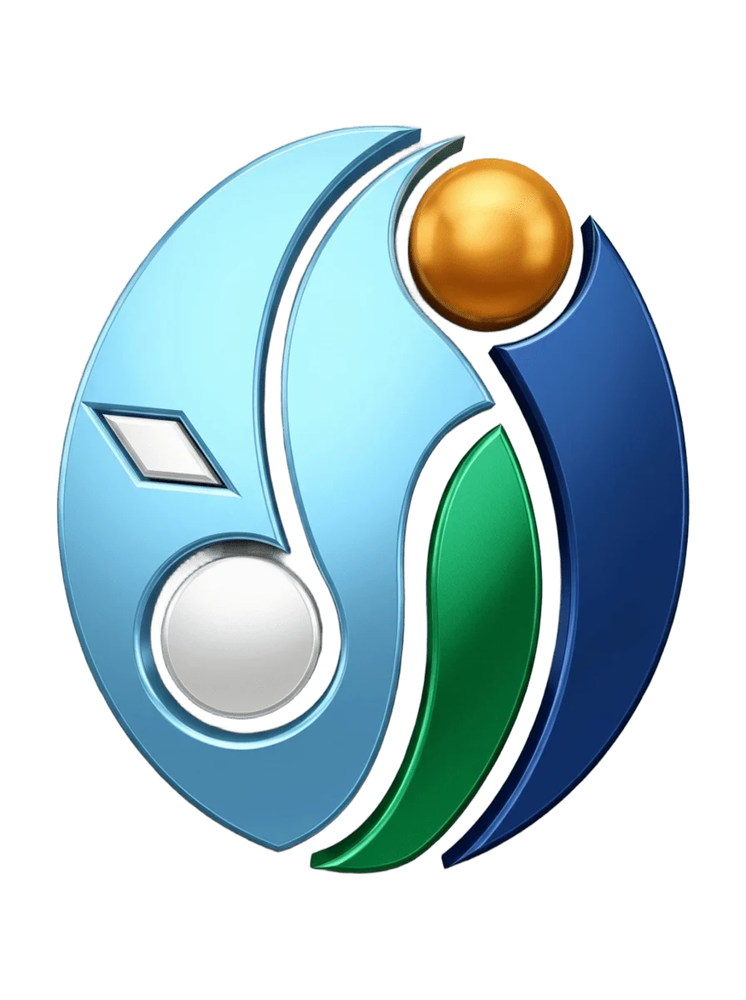
2021–2026
STEI Yogyakarta
S1 · Ekonomi Syariah
IPK 3,882006–2011
STMIK Jayanusa
S1 · Sistem Informasi
IPK 3,5004 / PENGHARGAAN & PENCAPAIAN
Rekam jejak prestasi.
Prestasi utama
10 item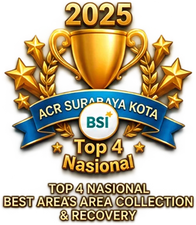
2025Top 4 Nasional
Memimpin ACR Surabaya Kota meraih Top 4 Nasional Best Area Collection, Restructuring & Recovery dari 45 area.
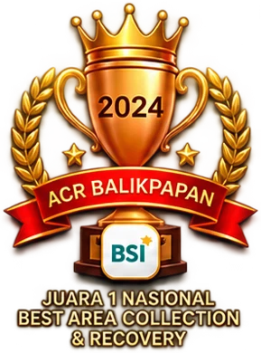
2024Juara 1 Nasional
Memimpin ACR Balikpapan mempertahankan Juara 1 Nasional Best Area Collection, Restructuring & Recovery dari 45 area (back to back champion).
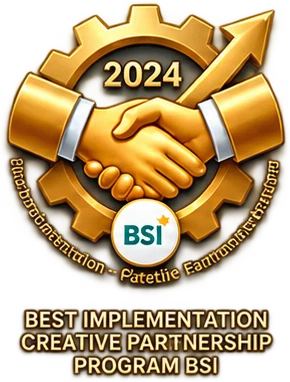
2024Best Implementation (Small Win)
PT Bank Syariah Indonesia Tbk — inovasi Creative Partnership Program.
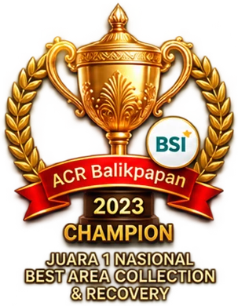
2023Juara 1 Nasional
Memimpin ACR Balikpapan meraih Juara 1 Nasional Best Area Collection, Restructuring & Recovery dari 45 area.
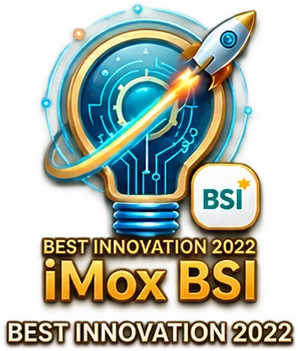
2022Best Innovation
PT Bank Syariah Indonesia Tbk — inovasi iMox.
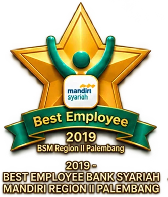
2019Best Employee
Bank Syariah Mandiri Region II Palembang.
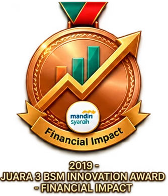
2019Juara 3 Innovation Award
Bank Syariah Mandiri — Improvement Financial Impact.
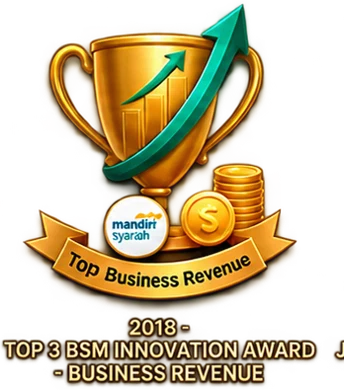
2018Top 3 Innovation Award
Bank Syariah Mandiri — Business Revenue.
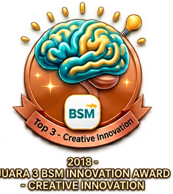
2018Juara 3 Innovation Award
Bank Syariah Mandiri — Creative Innovation.
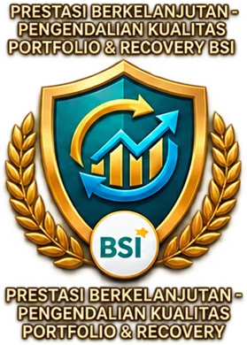
BerkelanjutanPengendalian kualitas portofolio & recovery
Memimpin pengelolaan portofolio pembiayaan beberapa area BSI dengan fokus pengendalian Kolektibilitas 2 dan NPF, optimalisasi recovery, serta peningkatan profitabilitas secara berkelanjutan dan prudent.
Prestasi lainnya
5 item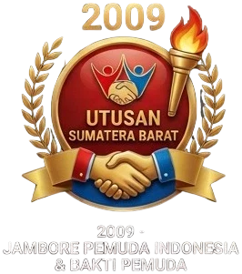
2009Utusan Sumatera Barat
Jambore Pemuda Indonesia & Bakti Pemuda Antar Provinsi ke Banten.
2009
Tourism Ambassador
Kabupaten Lebong, Provinsi Bengkulu.
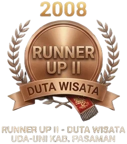
2008Runner Up II Duta Wisata
Uda-Uni Kabupaten Pasaman, Sumatera Barat.
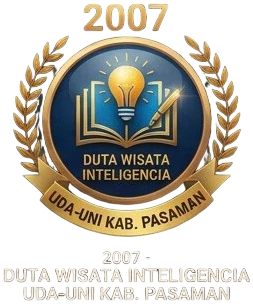
2007Duta Wisata Inteligencia
Uda-Uni Kabupaten Pasaman, Sumatera Barat.
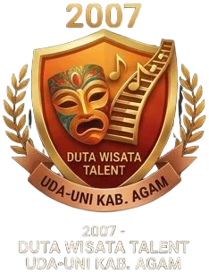
2007Duta Wisata Talent
Uda-Uni Kabupaten Agam, Sumatera Barat.
05 / PROYEK & PROTOTIPE
Inovasi digital.
Eksplorasi solusi digital untuk ekosistem perbankan. Seluruh proyek berada pada tahap pengujian/prototipe dan belum dioperasikan secara komersial.
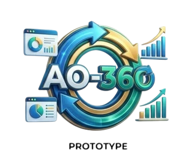
PROTOTIPEAO-360
Digital Account Officer Management (Platform untuk BPR & BPRS)
Mendukung Account Officer dan manajemen dalam mengelola relasi nasabah, memantau aktivitas dan pipeline bisnis, follow-up, serta dashboard kinerja.
PROTOTIPE
ASSETIVA
Digital Asset Marketplace
Konsep marketplace digital yang menghubungkan aset lelang bank dengan calon pembeli.
PROTOTIPE
BSI ASSET DEAL
Digital Asset Marketplace untuk PT. Bank Syariah Indonesia, Tbk
Konsep marketplace digital yang menghubungkan aset lelang PT. Bank Syariah Indonesia dengan calon pembeli.
PROTOTIPE
CRR Academy
Banking Learning Ecosystem
Ekosistem pembelajaran digital (LMS) untuk meningkatkan kompetensi profesional perbankan: bank umum, BPR, dan BPRS.
PROTOTIPE
RESOLUSI
Restrukturisasi Online Terintegrasi
platform digital pengajuan restrukturisasi pembiayaan yang online, terintegrasi, transparan, dan efisien (proyek perbankan).
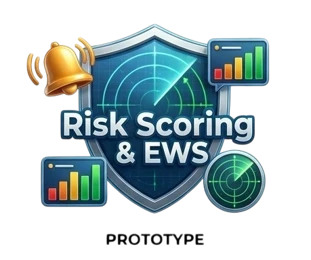
PROTOTIPERisk Scoring & EWS
Banking Risk Scoring & Early Warning System
konsep monitoring risiko kredit melalui skor risiko nasabah, peringatan dini, dan prioritas collection.
06 / PERBANKAN & TEKNOLOGI
Keahlian profesional.
Keahlian perbankan
11 itemIslamic Banking & Sharia Financial Principles
Pemahaman prinsip perbankan syariah, akad pembiayaan, pengelolaan dana, serta penerapan kepatuhan terhadap prinsip dan ketentuan syariah.
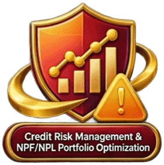
Credit Risk Management & NPF/NPL Portfolio Optimization
Kemampuan mengidentifikasi, menganalisis, mengendalikan, dan memitigasi risiko pembiayaan serta mengoptimalkan kualitas portofolio melalui segmentasi risiko dan strategi penanganan pembiayaan bermasalah.
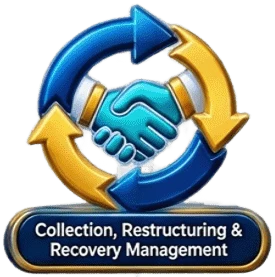
Collection, Restructuring & Recovery Management
Kemampuan mengelola strategi penagihan, restrukturisasi, penyelesaian pembiayaan bermasalah, dan pemulihan aset melalui pendekatan yang terukur dan efektif.
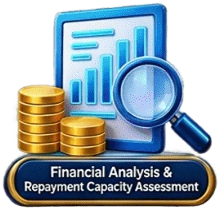
Financial Analysis & Repayment Capacity Assessment
Kemampuan menganalisis kondisi keuangan debitur, arus kas, kemampuan membayar, serta kelayakan skema penyelesaian berdasarkan kapasitas finansial dan prospek usaha.
Credit Workout, Debt Negotiation & Settlement Strategy
Kemampuan menyusun strategi penyelesaian kewajiban, melakukan negosiasi dengan debitur, dan merancang skema pelunasan yang realistis serta optimal bagi perusahaan.
Collateral Valuation & Asset Recovery Management
Kemampuan mengevaluasi nilai agunan, menganalisis legalitas aset, serta mengoptimalkan pemulihan melalui strategi penjualan, pelepasan aset, dan mekanisme lelang.
Strategic Leadership & Portfolio Performance Management
Kemampuan memimpin tim, menyusun strategi bisnis, menetapkan target, serta mengelola dan mengevaluasi kinerja tim maupun portofolio.
Strategic Recovery Planning & Decision Making
Kemampuan menyusun perencanaan recovery, menentukan prioritas penanganan, mengevaluasi alternatif penyelesaian, dan mengambil keputusan berdasarkan analisis risiko serta potensi pemulihan.
Marketing, Communication & Negotiation Skills
Kemampuan mengembangkan strategi pemasaran, membangun relasi bisnis, melakukan komunikasi persuasif, dan negosiasi untuk mendukung pencapaian target bisnis.
Problem Solving & Analytical Thinking
Kemampuan mengidentifikasi akar permasalahan, menganalisis data, mengevaluasi alternatif solusi, dan mengambil keputusan secara sistematis.
Business Innovation, Process Acceleration & Revenue Optimization
Kemampuan mengembangkan inovasi proses kerja, meningkatkan efisiensi operasional, memanfaatkan teknologi, serta mengoptimalkan peluang bisnis dan pendapatan perusahaan.
Keahlian Artificial Intelligence (AI)
9 item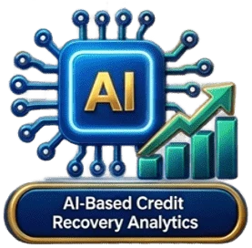
AI-Based Credit Recovery Analytics
Pemanfaatan teknologi AI dan analisis data untuk mendukung segmentasi debitur, identifikasi risiko, prediksi potensi pembayaran, prioritas penagihan, dan rekomendasi strategi recovery.
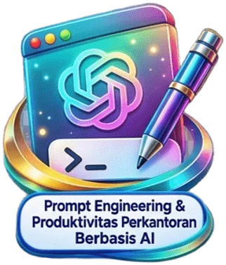
Prompt Engineering & Produktivitas Perkantoran Berbasis AI
Merancang prompt yang efektif serta menerapkan kerangka kerja (framework) perintah AI menggunakan ChatGPT dan Claude untuk penulisan profesional, analisis strategis, penyusunan bahan ajar/rencana pembelajaran, pembuatan draf presentasi otomatis, serta ringkasan rapat (voice-to-text)
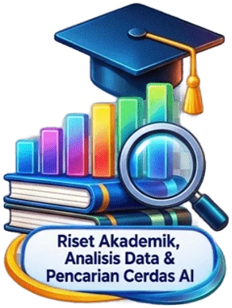
Riset Akademik, Analisis Data & Pencarian Cerdas AI
Mengaplikasikan AI (termasuk Grok dan Perplexity) untuk penelusuran mendalam (deep search), pencarian referensi jurnal ilmiah, perumusan ide konten, serta pengolahan/analisis laporan berbasis Excel dengan pemahaman terkait AI detector dan parafrase.
Produksi Konten Multimedia & Visual Berbasis AI
Membuat dan mengolah aset visual maupun video menggunakan perangkat AI seperti Gemini, Google Flow, Seedance, dan fitur visual ChatGPT/GPT-Vision, termasuk pembuatan desain logo dan materi konten kreatif.
AI Voice Cloning, Dubbing & Audio Konten
Mengoperasikan perangkat AI seperti ElevenLabs untuk kebutuhan voice cloning dan dubbing guna mendukung produksi konten multimedia.
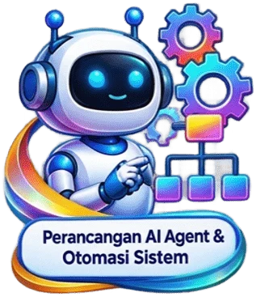
Perancangan AI Agent & Otomasi Sistem
Mengelola AI workspace, merancang agen kecerdasan buatan (AI Agent), serta mengimplementasikan otomasi sistem dan media sosial lintas platform (termasuk menggunakan Hermes).
Pengembangan Konten Kreator & Strategi Konten Digital
Memanfaatkan AI untuk mempercepat alur kerja pembuatan konten bisnis, pemasaran, dan media sosial secara praktis dan terstruktur
Pengelolaan Dokumen, Parafrase & Penyuntingan Teks AI
Memanfaatkan AI (seperti Claude dan ChatGPT) untuk penulisan kreatif, penyuntingan, serta parafrase teks akademik maupun profesional.
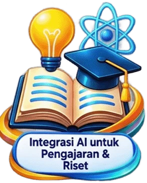
Integrasi AI untuk Pengajaran & Riset
Mengoptimalkan perangkat AI untuk mendukung kegiatan akademik, pengajaran, penyusunan materi pembelajaran, dan riset.
07 / KOMPETENSI TERDOKUMENTASI
Sertifikasi profesional.
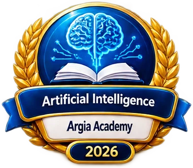
2026Artificial Intelligence
Argia Academy
2024
Leadership for Junior Manager
Dale Carnegie Associates
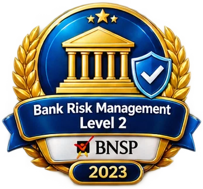
2023Bank Risk Management Level 2
BNSP
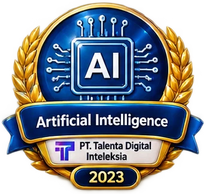
2023Artificial Intelligence
PT. Taalenta Digital Inteleksia
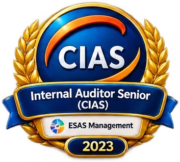
2023Internal Auditor Senior (CIAS)
ESAS Management
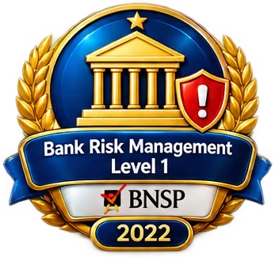
2022Bank Risk Management Level 1
BNSP
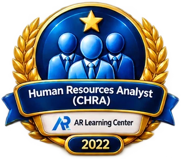
2022Human Resources Analyst (C.HRA)
AR Learning Center
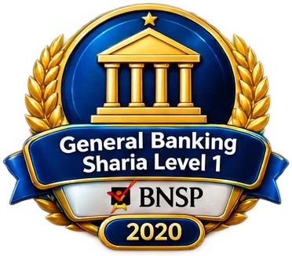
2020General Banking Sharia Level 1
BNSP
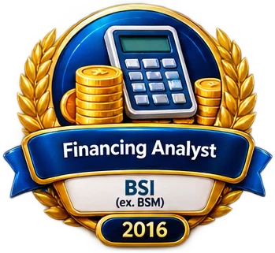
2016Financing Analyst
BSI (ex. BSM)
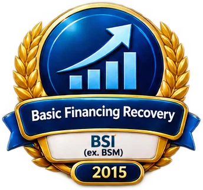
2015Basic Financing Recovery
BSI (ex. BSM)
08 / RISET & AKADEMIK
Publikasi ilmiah.
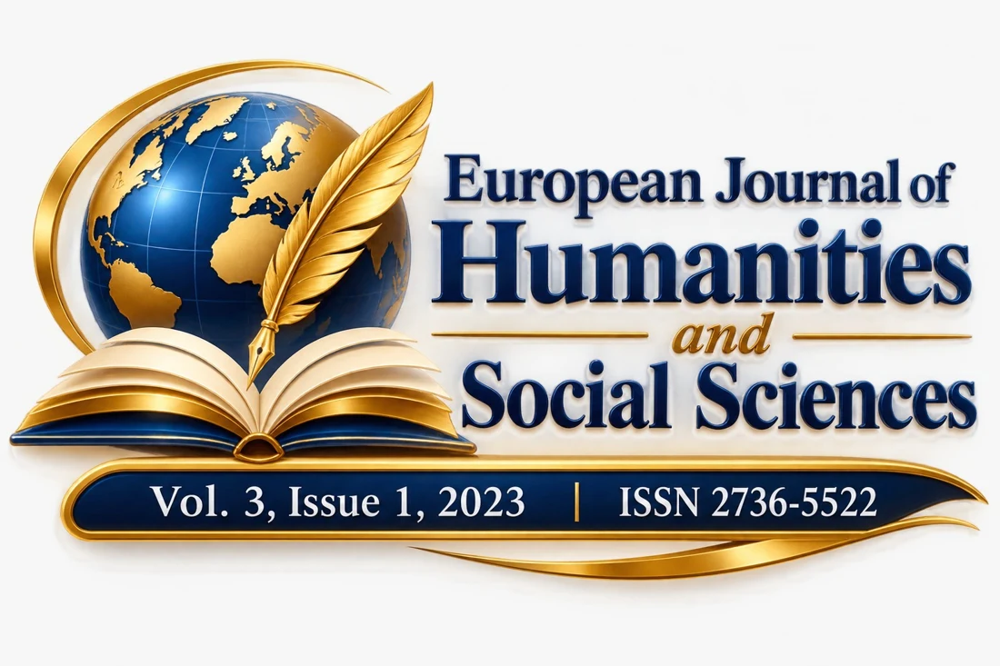
JURNAL · 2023
Digitalization of Zakat in Stimulating Community Socio-Economic Development in the Middle of the Covid-19 Pandemic (Maqashid Syariah Perspective)
European Journal of Humanities and Social Sciences
Vol. 3, Issue 1, 2023 · ISSN 2736-5522
09 / NARASUMBER & PENGEMBANGAN PROFESIONAL
Berbagi pengetahuan.
Pemateri pelatihan, pembelajaran internal, dan diskusi profesional bidang Collection, Restructuring & Recovery dan perbankan syariah.
Narasumber · 2026＋
Manajemen Field Collection & Keselamatan/Kepatuhan Kunjungan Lapangan
Digital Asset Marketing & Buyer Funnel untuk Agunan Bank
Narasumber · 2025＋
Strategi Voluntary Sale (Penjualan Sukarela) vs. Lelang Eksekusi/Lelang Non-Eksekusi
Collection Strategy Unsecured Financing
Collection Technique & Negotiation Skill Micro Segmentation
Narasumber · 2024＋
Eksekusi Hak Tanggungan, Fidusia & Penanganan Gugatan/Perlawanan
Teknik Negosiasi Deadlock & Penyelesaian Damai (Peaceful Settlement)
Narasumber · 2023＋
Harmonisasi Fiqh Perbankan Syariah dengan Hukum Positif Indonesia
Collection Strategy Unsecured Financing
Collection Technique & Negotiation Skill Micro Segmentation
Narasumber · 2022＋
Mitigasi Pembiayaan Bermasalah (Collection, Restructuring & Litigation)
Digital Payment Evolution “Bank or Fintech?”; Konsep Dasar dan Maqashid Keuangan Syariah
Internal BSI
Narasumber · 2021＋
Small Claim Court (Gugatan Sederhana) melalui Pengadilan Agama
Aspek Legal Penanganan Pembiayaan Bermasalah
Technique Collection
Gugatan Perdata dan Penetapan Sita Eksekusi
Narasumber · 2020＋
Collection Management; Overview of Financing Recovery
Hukum Lelang dan Hukum Jaminan
Aspek Hukum Pidana Proses Collection
Narasumber · 2019＋
Lelang Agunan Pembiayaan (Proses, Tujuan dan Risiko)
Consumer Collection Credit Risk Management
Procedure and Mechanism of Financing Restructure
Riwayat pelatihan & webinar (2014–2026)＋
Training Program of the sharpening soft skills and competencies for fresh graduate
Market Conduct: Risiko Reputasi, Denda Regulator dan Masa Depan Perlindungan Konsumen
LPPI
SBTC Career Center Yogyakarta
Webinar Agile Execution Fundamentals dan Workshop Agile Leadership for Adaptive Organizations
Training Essential Series Basic IT Security dan Basic Data Protection
Corporate Innovation Consulting (CIAS)
Bank Syariah Indonesia
Training Leadership Effectiveness to Achieve Result for Junior Manager
Webinar BSI Cakap Digital: Meningkatkan Kemampuan Berpikir Kritis dalam Tata Kelola Digital.
Dale Carnegie Associates
Bank Syariah Indonesia
Webinar Implementasi SEO, SEM dan ASO
Webinar Kemajuan dalam Kecerdasan Buatan: Menjelajahi Alat dan Teknik Terbaru untuk Pertumbuhan Bisnis
Webinar AI & ChatGPT untuk Akademik dan Perkantoran.
Bank Syariah Indonesia
Bank Mandiri
PT Taalenta Digital Inteleksia
Webinar Dasar Pembuatan Konten untuk Kampanye Digital; Livin’ for Lifestyle Fulfillment
Analisis Data untuk Bisnis: dari Konsep Dasar hingga Strategi Lanjutan
Lecturing and International Seminar on Transformational Leadership
Bank Mandiri
Bank Mandiri
International Women University (IWU) - Philippiness
Webinar Digital Payment Evolution (Bank atau Fintech yang Akan Jadi Pengendali Pasar); Winning the Market with Bundling Solution Strategy
BSI Product Holding Ratio — Level Up Your Fee Based Income with Remittance
Training BSI Funding & Priority Banking Level Intermediate
Bank Syariah Indonesia
Bank Syariah Indonesia
Bank Syariah Indonesia
Webinar Risk Management in the Digital Area
BSI Leap to Lead Innovation Challenge Workshop: Empathizing to Define Problems
Webinar Memaksimalkan Produktivitas Tim dengan Teknik Iterasi Kolaboratif
Bank Syariah Indonesia
Bank Syariah Indonesia
Bank Mandiri
Webinar Strategi Manajemen Risiko Digital: Mitigasi Risiko dan Memastikan Kelangsungan Bisnis
Webinar Penerapan Program APU, PPT, dan PPPSPM
Internal Audit Senior (CIAS)
Bank Risk Management Level 2
Bank Mandiri
Bank Mandiri
ESAS Management
BNSP
Seminar Nasional Pra-Youth Sharia Economic Forum Indonesia Menjawab Persaingan dari Technopreneur, Inklusi Keuangan Digital hingga Ketahanan Data Nasional
Webinar Nasional Perppu Cipta Kerja dan Antisipasi Resesi Global.
ITB Ahmad Dahlan Jakarta
ITB Ahmad Dahlan Jakarta
Virtual Seminar Risk Management Based on ISO 31000:2018
Human Resources Analyst (C.HRA)
Bank Risk Management Level 1
Revolution Mind Indonesia
AR Learning Center
Certified BNSP
Webinar Nasional Peran Keuangan Syariah dalam Menopang Pemulihan Ekonomi Nasional sesuai Nilai-Nilai Maqashid Syariah
Talk Show Wakaf Uang dan Transformasi Perbankan Syariah.
BEM Fakultas Syariah dan Hukum Islam Universitas Islam NU Jepara
Yayasan Edukasi Wakaf Indonesia
Webinar Peran Keuangan Syariah dalam Menopang Pemulihan Ekonomi Nasional sesuai Nilai-Nilai Maqashid Syariah; Webinar Hawalah dan Aplikasinya di Perbankan dan Keuangan Syariah
Virtual Seminar Peran Perempuan Indonesia di Sektor Perbankan dan Jasa Keuangan
Iqtishad Consulting
LPPI
Seminar BRI Soprema 2021 Sociopreneur 101: Strategi Sociopreneur dalam Kebangkitan Bangsa di Era Disrupsi
Virtual Seminar Menjadikan Industri Jasa Keuangan Adaptif dan Antisipatif serta Penyertaan Modal Negara antara Kepentingan Sosial dan Finansial.
FIS UGM/BRI/IDTimes Jogja
LPPI
Sosialisasi Peran dan Fungsi Bank Indonesia dalam Membangun Ekosistem Layanan Keuangan Digital
Webinar Nasional Peran Milenial dan Menggerakkan Ekonomi UMKM
Citra Institute
Kementerian Koperasi & UKM/Asosiasi IUMKM Indonesia/PT BPR Mandiri Sejahtera Abadi
Webinar Literasi Digital Nasional Hidup Pintar dengan Literasi Digital
Workshop Pendidikan Dasar Pembiayaan Syariah
Webinar Pesantren Goes Digital, Sebuah Keharusan
Kominfo & Siber Kreasi
Amana Sharia Consulting
Langit7
Webinar Perkembangan Industri Halal dan Peran Perbankan Syariah
Webinar Wakaf, Fundraising, dan Pemberdayaan Ekonomi Ummat: Pengalaman Muhammadiyah
Webinar Meningkatkan Kualitas Hidup dengan Perencanaan Keuangan.
PT Bank Syariah Indonesia & Koran Tempo
Indonesia Waqf Institute
BRI
Webinar Tantangan Ekonomi Islam dalam Era Digital
Webinar Strategi Pengembangan Wakaf Produktif untuk Pendidikan dan Sosial Ekonomi
Kuliah Umum Model Ekonomi Masa Depan: Tantangan dan Peluang Ekonomi Islam.
Himpunan Mahasiswa Prodi Ekonomi Pembangunan
Indonesia Waqf Institute/KNEKS/Iqtishad Consulting
STEI Yogyakarta
Webinar Nasional Pengembangan Ekonomi Syariah dan Penguatan UMKM
Webinar & Talk Show Potensi Besar Konsumen Muslim yang Belum Digarap Maksimal
Webinar Sinergi Akselerasi Pengembangan UMKM Industri Halal
FE Magister Manajemen UII
Langit7
KNEKS.
Pelatihan & Workshop Hukum Kepailitan Syariah & PKPU
Webinar Perbankan Syariah tentang aspek legal dokumen perjanjian pembiayaan syariah dari sudut pandang praktisi
Iqtishad Consulting
ToT Ekonomi Makro Islam:
Pengantar dan Konsep Dasar Ekonomi Makro Islam;
Perhitungan Pendapatan Nasional dalam Perspektif Islam;
Konsumsi Agregat dalam Perspektif Islam;
Investasi Agregat dan Tabungan dalam Islam;
Zakat dan Kebijakan Fiskal dalam Islam;
Kajian Bunga dalam Perekonomian dan Sistem Keuangan Islam;
Uang dan Moneter Islam; Kapita Selekta
Iqtishad Consulting.
Staff Development Programme (SDP);
General Banking Sharia Level
PT Bank Syariah Mandiri
Basic Financing Recovery
PT Bank Syariah Mandiri
Banking Staff Programme (Micro Analyst), Batch XII
PT Bank Syariah Mandiri
10 / KONTAK & JEJARING
Mari terhubung.
Terbuka untuk jejaring profesional dan pertukaran gagasan.
Hubungi saya melalui kanal berikut untuk berdiskusi mengenai perbankan, inovasi bisnis, dan teknologi digital.
↓ Unduh CV lengkap